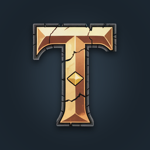

Qcyq
Qcyq
Turnia: Old School MMORPG
One shared world, open PvP and a death that hurts. An MMORPG for one hand.
QcyqApps is my one-person studio. I build online games in Unity, and the systems that hold up in them become assets you can use in your own projects.

One shared world, open PvP and a death that hurts. An MMORPG for one hand.

Procedural AoE and skill indicators for URP. Five shapes in exact metres, cast-progress fills, terrain projection, and a pooled one-line API.
I'm Adrian Śliwka, a Unity developer from Poland, and I've been making games and tools in Unity for several years.
Most of what I build is online: shared worlds, server-authoritative combat, and mobile controls you can play with one hand. My game Turnia runs on a .NET server that uses the same game code as the Unity client.
My Unity assets come from the same work. A system goes into the store only after it has been used in a real game, then cleaned up, documented and tested on its own.